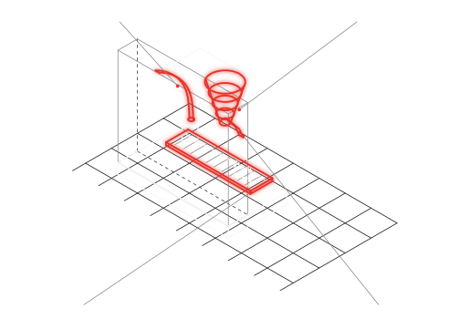

Condotti e imbuti a contatto alimentare, senza stampo.
Condotti latte, imbuti, convogliatori, cornici e meccanismi di erogazione in PA2200 sinterizzata con dichiarazione di conformità al contatto alimentare (Reg. UE 10/2011): serie da 100 a 1.000 pezzi l'anno con varianti frequenti, dove lo stampo non si ripaga e il restyling arriva prima dell'ammortamento.
100–1.000pezzi l'anno, varianti frequenti
EU 10/2011contatto alimentare dichiarato
+80°Climite sotto carico della PA2200
Fig. 01 — Vista isometrica
Tav. DPG-APP-ALI

01CONDOTTO LATTE, CANALE LISCIO
02IMBUTO IN UN PEZZO
03CORNICE DI SCARICO
04CONVOGLIATORE
Gruppo erogazione con condotto latte, imbuto e cornice di scarico, tavola isometrica
In rosso: le parti che si producono in additive
Documento
DPG-APP-ALI
Revisione
REV. 00 · BOZZA
Lingua
IT
Editore
Due Pi Greco S.r.l.
Pagina
01 / 02
DUE PI GRECOAdditive manufacturing
Scheda applicazione · DPG-APP-ALI Macchine per caffè, vending e food equipment
01Il conto che conoscete
Come si fa oggi
Il condotto latte oggi è tre stampati incollati o un tubo piegato con i suoi raccordi; l'imbuto ha uno stampo che si ripaga solo se il restyling aspetta. E ogni variante di macchina, per mercato o per cliente, riapre la discussione sull'attrezzatura.
In sinterizzazione
In sinterizzazione il condotto nasce in un pezzo solo, con il canale interno liscio e la curva che serve al flusso, non quella che permette lo sformo. La PA2200 ha dichiarazione EU 10/2011 e lavora fino a +80 °C sotto carico: via latte, imbuti e condotti del prodotto in polvere non cambiano materiale; sulla via caffè calda la temperatura di esercizio si verifica caso per caso.
02Cosa cambia in additive
01
Canale interno liscio, in un pezzo
Il condotto nasce intero: niente giunzioni dove il latte si ferma, niente incollaggi da sanificare, il percorso che serve al flusso.
monoblocconessuna giunzione da sanificare
02
Contatto alimentare dichiarato
PA2200 con dichiarazione di conformità al Reg. UE 10/2011; la conformità del pezzo finito si dichiara per lotto, e la finitura si sceglie di conseguenza.
DPG-MAT-PA2200EU 10/2011
03
Serie ponte e restyling
Prima dello stampo, o al posto dello stampo: da 100 a 1.000 pezzi l'anno, con la variante per mercato che entra in produzione in giorni.
nessun riattrezzaggiorevisioni in tempo reale
04
Ricambi per il parco installato
Il condotto di una macchina fuori produzione si riordina dal file, identico: tracciabilità di lotto, nessuno scaffale.
magazzino digitaleriordino identico
03Materiali per il settoreRiferimenti: schede DPG-MAT e matrice DPG-CAT
Materiale
Processo
Perché qui
Riferimento
PA2200 (PA12)
SLS
contatto alimentare EU 10/2011, fino a +80 °C sotto carico, sterilizzabile
DPG-MAT-PA2200
Polipropilene
SAF
vie acqua e chimica di sanificazione; serie medie
DPG-MAT-PP
Nylon 12CF
FDM
staffe e supporti fuori dal contatto prodotto, rigidità estrema a peso minimo
matriceDPG-CAT §01
In produzione, oggi
Per un costruttore di forni professionali produciamo in serie ricorrente cassetti e profili raccogligocce in PA2200: componenti a contatto con il prodotto, pareti da 2,5 mm, riordinati in lotti piccoli, lotto tracciato. Non un prototipo: una fornitura.
Il rovescio — quando non conviene
Sopra gli 80 °C sotto carico la PA12 non è la risposta: la via caffè calda e la caldaia restano dove sono, e ve lo diciamo prima. Sopra i volumi da stampo, torna lo stampo. E la superficie sinterizzata è opaca e leggermente porosa: dove serve una parete lucida e lavabile a vista, si finisce o si sceglie altro.
Mandateci lo STEP di un condotto. Vi diciamo anche quando non conviene.